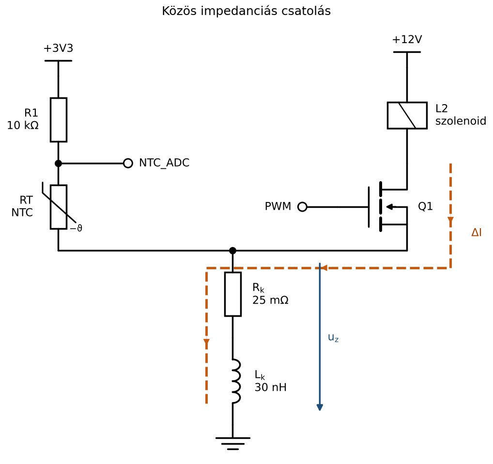
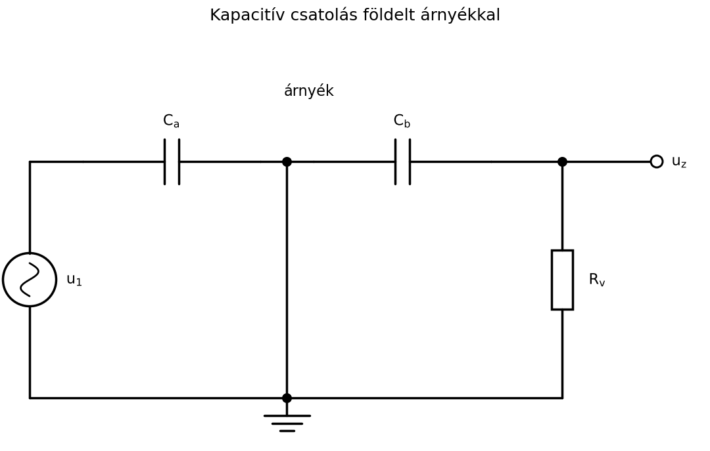
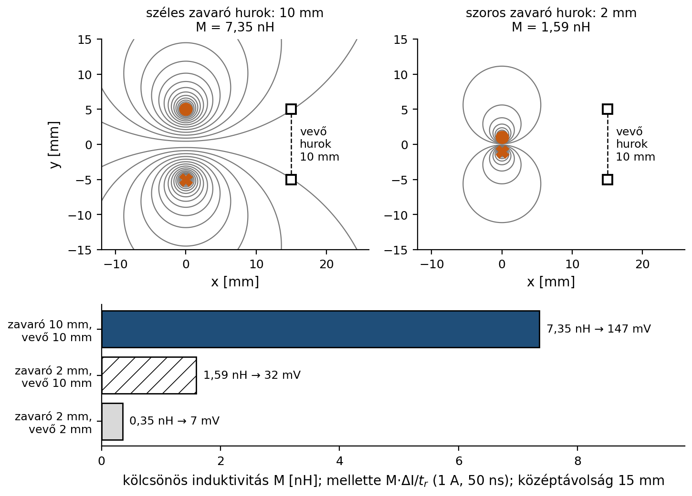

Ennek az alfejezetnek a végére:
Építünk Az EMC alapjai: forrás, csatolás, vevő, a Kapacitás, töltés és energia és a Mágneses tér és induktivitás anyagára.
A szenzormodulon az NTC_ADC vezeték egy szakaszon a szolenoidot kapcsoló MOSFET drainvezetéke (LOAD) mellett fut. A PWM minden élénél rövid tüske jelenik meg a hőmérsékletmérésen. Három kollégától három tanácsot kapsz: „tegyél rá kondenzátort”, „árnyékold le”, „vidd messzebb”. Mindegyik jó lehet, és mindegyik lehet hatástalan: attól függ, milyen úton jut át a zavar. Ez az alfejezet a négy utat és a megkülönböztetésük módját tanítja.
Négy csatolási mechanizmus van:
A hasonlatok korlátja: a vízvezetéknek nincs tehetetlensége, a földszakasznak viszont induktivitása is van; a kapacitív és induktív csatolás pedig egyszerre, ugyanazon a vezetékpáron működik, csak az arányuk változik.
Az NTC-osztó alsó pontja és a MOSFET source-a ugyanazon a vezetékszakaszon tér vissza a táp negatív sarkához.

A mikrovezérlő az NTC_ADC feszültségét a saját földjéhez (a rajz alsó pontjához) méri. A közös szakaszon eső feszültség az NTC-osztó alsó pontját emeli meg, és ennek az hányada (25 °C-on a fele) a mérő csomóponton is megjelenik. Az eltoló feszültség:
Lineáris, nagyságú, idejű élre a csúcs . Dimenzió: . Egy 5 cm hosszú, 1 mm széles, 35 µm vastag rézszakasz ellenállása (Ellenállás és az Ohm-törvény). Induktivitása a visszatérő út helyétől függ; a közeli visszaút nélküli vezetékre ökölszabály a néhány tized–egy nH/mm, itt mintaadatként 30 nH-t veszünk.
Az ellenszer: ne legyen közös szakasz (a nagyáramú visszaút külön vezetéken, a Földelési stratégiák és visszatérő áramutak témája), vagy legyen kis és (rövid, széles út).
A zavaró vezeték feszültségű, a vevő csomópontja kölcsönös kapacitáson (mutual capacitance) át kapcsolódik hozzá. A vevő csomópontján a föld felé (a két végi ellenállás párhuzamos eredője) és földkapacitás van. A csomóponti törvény a csomópontra:
Ha , és a vevő időállandója jóval kisebb a felfutási időnél, akkor a bal oldal , a jobb oldalon az ellenállás dominál:
Szavakkal: a vevőbe a áramot injektál, és ez az áram a vevő impedanciáján esik. Nagy impedanciájú vevő érzékeny, kis impedanciájú alig. A képlet a esetre jó. Lineáris, nagyságú élre az elsőrendű modell pontos csúcsa:
Ha az él nagyon gyors (), a zárójel -ra egyszerűsödik, és : kapacitív osztó. Ilyenkor nem az , hanem a számít: egy nagy kondenzátor a vevőn szétosztja az injektált töltést.
Elektromos árnyékolás: földelt vezetőt (árnyékot) teszünk a két vezető közé. Az erővonalak az árnyékon végződnek, az injektált áram a földbe folyik, és nem a vevőbe.

Védőgyűrű (guard ring): nagyon nagy impedanciájú csomópontot olyan vezetővel veszünk körül, amelyet egy puffer (Az ideális műveleti erősítő és a negatív visszacsatolás) a csomóponttal azonos potenciálra hajt. Ha a gyűrű és a csomópont között nincs feszültségkülönbség, a köztük lévő szivárgás és kapacitás nem visz áramot, a külső áramot pedig a gyűrű fogja fel.
A zavaró hurok árama a vevő hurkában feszültséget indukál (Mágneses tér és induktivitás):
ahol a két hurok kölcsönös induktivitása (mutual inductance), H-ban. Ez a feszültség a vevő hurokban sorosan lép fel, és a két végi ellenállás, (közeli vég, near end: a zavaró forrás felőli) és (távoli vég, far end) között oszlik meg:
Ha a vevő egyik vége kis ellenállású, az indukált feszültség majdnem teljesen a másik végen jelenik meg: az impedancia csökkentése nem tünteti el, csak átrendezi. A képlet gyenge csatolásra és a hullámhosszhoz képest rövid vezetékre érvényes.
-et a geometria határozza meg. Két hosszú, párhuzamos vezetékpárra, ha a zavaró, a vevő pár keresztmetszeti helye:
Itt H/m, a párhuzamos hossz. A hurkok szűkítésével a logaritmus argumentuma 1-hez tart, nullához: ha mindkét pár távolsága és kicsi a középtávolsághoz képest, .

Ha mindkét pár 10 mm-ről 2 mm-re szűkül (15 mm középtávolságnál), 7,35 nH-ről 0,35 nH-re, kb. huszadára csökken. A fizikai ok: az oda- és visszamenő vezető tere kívül majdnem kioltja egymást (Az EMC alapjai: forrás, csatolás, vevő), és a szűk vevőhurok kevés fluxust fog be. A hurokterület a zaj antennája, forrásként és vevőként is.
Csavart érpár (twisted pair): a vevő hurok fél csavarásonként irányt vált, a szomszédos szakaszokban indukált feszültségek előjele ellentétes, és nagyrészt kioltják egymást (elhanyagolt végszakaszok maradnak). Mágneses árnyék alacsony frekvencián csak nagy permeabilitású anyaggal, korlátozottan működik; nagy frekvencián a vezető árnyék örvényáramai segítenek. A vékony, csak egy ponton földelt fólia az elektromos teret fogja fel, a mágnesest alig.
| Próba (szimulációban, vagy kikapcsolt állapotban átkötve) | Kapacitív | Induktív |
|---|---|---|
| zavaró terhelés leválasztva, feszültség megmarad | zavar marad | eltűnik (nincs áram) |
| vevő mindkét végi ellenállása azonos arányban csökkentve | csökken | a végfeszültségek nem változnak |
| jel a két végen | azonos előjelű | ellentétes előjelű |
| mit követ | ||
| jellemző vevő | nagy impedancia | kis impedancia, nagy hurok |
Induktív terhelést soha ne húzz ki működés közben (Biztonságos működési tartomány, lavina és induktív terhelés). Mérésnél a szonda hosszú földvezetéke maga is vevőhurok (Az oszcilloszkóp és a szonda): rövid, rugós földcsatlakozóval ellenőrizd, hogy a tüske nem a mérésből jön-e.
Az egymás mellett futó vezetékek áthallásánál (crosstalk) a két mechanizmus egyszerre hat. Koncentrált modellünk szerint a közeli végen a kapacitív és induktív rész azonos előjelű, a távoli végen ellentétes, ott részben kioltják egymást. (Homogén szigetelőben futó vezetékeknél a távolvégi áthallás elvileg ki is olthatja egymást; a hullámterjedéssel számoló pontos vonalmodell meghaladja ezt a könyvet.)
Térben is megkülönböztetünk két tartományt: a közeli térben (, ahol ) az elektromos és mágneses tér külön viselkedik, ezt írja le a kapacitív és induktív modell; a távoltérben a kettő aránya a szabad tér hullámimpedanciája, kb. 377 Ω, és a csatolás sugárzott. 30 MHz-en a határ kb. 1,6 m, 1 GHz-en 4,8 cm: egy kis modulon belül a csatolás többnyire közeli téri.
| Eszköz | Közös imp. | Kapacitív | Induktív |
|---|---|---|---|
| külön visszatérő út, rövid széles vezető | igen | – | részben |
| nagyobb távolság | – | igen | igen |
| kis hurok, jel mellett visszavezető, csavart pár | – | részben | igen |
| lassabb él (kisebb du/dt, di/dt) | igen | igen | igen |
| kisebb vevőimpedancia, C a vevőn | – | igen | csak a kondenzátoros végen |
| földelt elektromos árnyék, védőgyűrű | – | igen | nem (alacsony frekvencián) |
Továbbvitt eredmény. A becslések: (kapacitív, ) és (induktív). Ezeket a Földelési stratégiák és visszatérő áramutak, a Zajszűrés: RC, LC, ferrit, közös módusú fojtó, árnyékolás, a Felfutási idő, sávszélesség és távvezetékek és a Tervezési átvizsgálás és átadás a NYÁK-tervezésnek használja.
Továbbvitt eredmény. A hurokterület-szabály: a zavaró és a vevő hurok területét is minimalizáld, a jel visszatérő vezetője legyen a jel mellett. Ezt a Földelési stratégiák és visszatérő áramutak, a Tápintegritás és hidegítés és a Tervezési átvizsgálás és átadás a NYÁK-tervezésnek alkalmazza.
Adatok (feltételezett, illetve mintaadatok): V, A, ns, pF, nH. Az ADC felbontása mV (1 LSB, legkisebb helyiértékű lépés).
Kapacitív, szűrőkondenzátor nélkül. (25 °C-on), pF (láb és vezeték).
Kapacitív, 100 nF szűrővel (a szenzormodul értéke): s, a csúcs mV, 1 LSB alatt.
Induktív ( kΩ, mindkét vég a saját földjéhez): V, végenként ±0,2 V.
Közös impedancia ( mΩ, nH): mV, V, a közös szakaszon összesen kb. 0,63 V (ennek az NTC-osztón 25 °C-on a fele jut a mérő csomópontra).
Józanész: a kapacitív tüske kondenzátorral megszűnt. A közös impedancia ellen a kondenzátor csak részben segít: ha az ADC földjéhez kötjük, a gyors induktív tüskét kiszűri, de az ellenállásos eltolás átlagát (PWM alatt a kitöltés és szorzatával arányos) egyik szűrő sem távolítja el; ha a kondenzátor a zajos földre köt, nem segít. Az induktív csatolás tüskéje a kondenzátoros végen eltűnik, de a hurokfeszültség a másik végen marad.
Az elkit.emc a becsléseket, az
elkit.transient az időbeli szimulációt adja. Az induktív
esetben a
feszültséget a vevő hurkába tett forrás modellezi.
from elkit import emc, transient as tr, units
from elkit import szenzormodul as sm
du, di, t_r, c12, m = sm.U_BE, 1.0, 50e-9, 2e-12, 20e-9
r_v = units.parallel(sm.R_NTC_SOROS, sm.NTC_R25)
emf = m * di / t_r
pulzus = tr.pwl([(0, 0), (10e-9, 0), (10.1e-9, emf), (60e-9, emf), (60.1e-9, 0), (1, 0)])
for c_v in (10e-12, sm.C_NTC_SZURO):
x = emc.capacitive_crosstalk(du, t_r, c12, r_v, c_v)
kap = (tr.Circuit().add_vsource("U1", "a", "0", tr.step(0, du, 10e-9, t_r))
.add_capacitor("C12", "a", "v", c12).add_resistor("Rv", "v", "0", r_v)
.add_capacitor("Cv", "v", "0", c_v)).simulate(t_end=400e-9, dt=0.1e-9)
ind = (tr.Circuit().add_vsource("UM", "n", "f", pulzus)
.add_resistor("Rn", "n", "0", 10e3).add_resistor("Rf", "f", "0", 10e3)
.add_capacitor("Cf", "f", "0", c_v)).simulate(t_end=400e-9, dt=0.05e-9)
print(f"C_v = {units.fmt(c_v, 'F')}: tau = {units.fmt(x.tau, 's')}")
print(f" kapacitív: képlet {units.fmt(x.estimate, 'V')}, pontos {units.fmt(x.peak, 'V')},"
f" szimuláció {units.fmt(max(kap.v('v')), 'V')}")
print(f" induktív: közeli vég max {units.fmt(max(ind.v('n')), 'V')},"
f" távoli vég max {units.fmt(max(abs(ind.v('f'))), 'V')}")
z = emc.common_impedance_noise(di, t_r, 25e-3, 30e-9)
print(f"közös impedancia: {units.fmt(z['resistive'], 'V')} + {units.fmt(z['inductive'], 'V')}"
f" = {units.fmt(z['peak'], 'V')};"
f" 1 LSB = {units.fmt(sm.ADC_U_REF / 2**sm.ADC_BITS, 'V')}")C_v = 10 pF: tau = 60 ns
kapacitív: képlet 2.4 V, pontos 1.36 V, szimuláció 1.36 V
induktív: közeli vég max 400 mV, távoli vég max 126 mV
C_v = 100 nF: tau = 500 µs
kapacitív: képlet 2.4 V, pontos 240 µV, szimuláció 240 µV
induktív: közeli vég max 400 mV, távoli vég max 20 µV
közös impedancia: 25 mV + 600 mV = 625 mV; 1 LSB = 806 µVAz induktív eset megmutatja a végek közti átrendeződést: a kondenzátoros távoli végen alig marad feszültség, a másik végen a teljes 400 mV megjelenik (10 pF-nál az él elején még ott is).
Most a geometria hatása: két párhuzamos, 10 cm hosszú huzal vezető sík fölött, FR4-szerű (relatív permittivitás 4) közegben.
print(" h [mm] d [mm] C12 [pF] M [nH]")
for h, d in ((2.5e-3, 2e-3), (2.5e-3, 6e-3), (0.5e-3, 2e-3)):
g = emc.wires_over_ground(h, h, d, 0.2e-3, length=0.1, eps_r=4)
print(f"{h * 1e3:6.1f} {d * 1e3:6.1f} {g['C12'] * 1e12:9.3f} {g['M'] * 1e9:7.2f}") h [mm] d [mm] C12 [pF] M [nH]
2.5 2.0 2.350 19.81
2.5 6.0 0.570 5.27
0.5 2.0 0.963 2.23A távolság megháromszorozása mindkét csatolást nagyjából negyedére csökkenti. A sík fölötti magasság ötödére vétele (a visszatérő vezető közelebb kerül, a hurok kisebb) -et kb. kilencedére, -t viszont csak kb. 40%-ára csökkenti: a hurokterület elsősorban az induktív csatolás fegyvere.
Gondolkodj előre: ha a zavaró terhelést lekapcsolod (), de a feszültségugrás marad, melyik rész tűnik el a két végen?
emc.mutual_inductance_pairs függvénnyel ábrázold (vagy
táblázd)
-et
a vevő pár 1, 2, 5, 10 mm-es vezetéktávolságára, ha a zavaró pár 2
mm-es, a középtávolság 15 mm, a hossz 10 cm. Milyen törvényszerűség
látszik?A zavar négy úton juthat át: közös impedancia (), kapacitív (, ha ; gyors élnél kapacitív osztó), induktív ( soros feszültség a vevő hurkában) és sugárzott. A kapacitív rész a két végen azonos, az induktív ellentétes előjelű; a terhelés leválasztása csak az induktívat szünteti meg. Kapacitív ellen kis vevőimpedancia, vevőoldali kondenzátor, földelt árnyék; induktív ellen kis hurok, jel melletti visszavezető, csavart pár; közös impedancia ellen külön visszatérő út. A hurokterület csökkentése mindkét oldalon a leghatékonyabb eszköz. A szenzormodul NTC-vezetékén a 100 nF-os kondenzátor a kapacitív tüskét 1,36 V-ról 0,24 mV-ra csökkenti, a közös földszakasz egyenáramú eltolását viszont nem szünteti meg. Továbbviszi: a két becslőképletet és a hurokterület-szabályt a földelés, a szűrés, a jel- és tápintegritás, valamint a tervezési átvizsgálás.
V. ns 20 ns, a becslés jó.
mV. Közeli vég: mV, a távoli végen mV.
Gyors élnél a csúcs (a nagy). nF; E12-ben 68 nF. A szenzormodul 100 nF-ja ezt bőven teljesíti. (Figyelj a kondenzátor ESL-jére és a bekötés induktivitására, amelyet ez a modell elhanyagol.)
mΩ; mV; V. Az induktív tag tizenkétszeres.
Kapacitív (a terhelés nélkül is megmarad, és nagy impedancián erős). Javítás: kis impedanciájú meghajtás vagy kondenzátor a vevőn; nagyobb távolság vagy földelt árnyék a két vezeték között.
for sv in (1e-3, 2e-3, 5e-3, 10e-3):
m_v = emc.mutual_inductance_pairs((0, 1e-3), (0, -1e-3),
(15e-3, sv / 2), (15e-3, -sv / 2), 0.1)
print(f"s_v = {sv * 1e3:4.1f} mm: M = {m_v * 1e9:.3f} nH,"
f" M/s_v = {m_v / sv * 1e6:.2f} µH/m")s_v = 1.0 mm: M = 0.177 nH, M/s_v = 0.18 µH/m
s_v = 2.0 mm: M = 0.352 nH, M/s_v = 0.18 µH/m
s_v = 5.0 mm: M = 0.861 nH, M/s_v = 0.17 µH/m
s_v = 10.0 mm: M = 1.594 nH, M/s_v = 0.16 µH/mKis vevőpárnál arányos a vevő pár szélességével (); a szélesség növekedésével az arányosság lassan romlik.